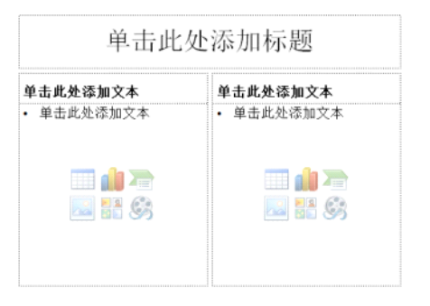
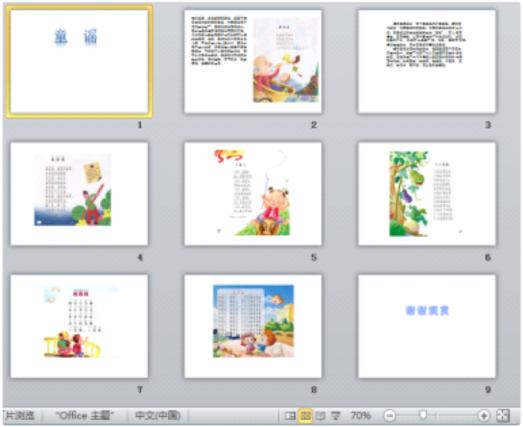
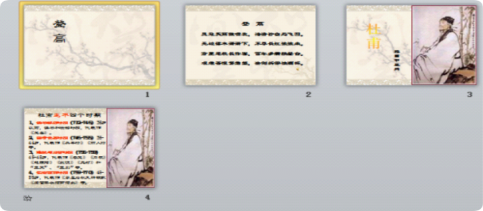
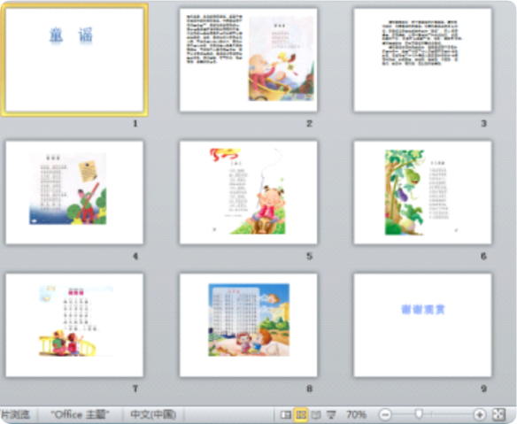
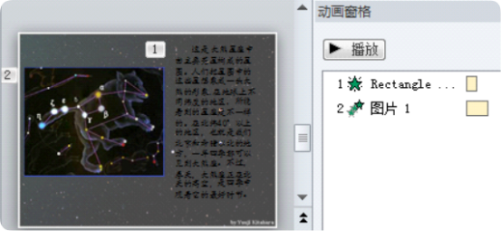

PPT判断题
返回主页当前：第1题 / 共15题
1.在制作多媒体作品时，可以随意引用他人的作品，只需要注明出处等信息就不会侵权。（）
答题解析
2.在PowerPoint中插入一个视频文件，在播放时只想保留视频的中间部分，可以使用命令对视频进行剪裁。（）
答题解析
3.在PowerPoint中，可以对插入的音频进行简单的编辑，如进行“淡入”“淡出”的设置。（）
答题解析
4.PowerPoint的幻灯片主题只可以应用于所有幻灯片。（）
答题解析
5.在PowerPoint2010中新增如下图所示的版式的幻灯片，在幻灯片浏览视图中看到的幻灯片界面也如图所示。（）

答题解析
6.如下图所示的PowerPoint2010幻灯片视图中，可以新增、删除幻灯片。（）

答题解析
7.在PowerPoint2010中，可以通过“设计 - 主题”的相关命令更改幻灯片的主题。（）
答题解析
8.如图所示，在PowerPoint2010的幻灯片浏览视图中，拖动幻灯片可以调整幻灯片播放顺序。（）

答题解析
9.在PowerPoint2010中，要去除左图中的黄色背景得到右图效果，只能使用“图片工具 - 格式”下的“删除背景”命令来实现。（）
答题解析
10. 在PowerPoint2010中，插入音频文件后可以通过“剪裁音频”按钮对音频进行裁剪，保留音频合适的部分作为幻灯片的背景音乐。（）
答题解析
11.在PowerPoint2010中，要将某对象的动画效果应用给其它对象，可以使用快速实现，减少幻灯片编辑时的重复工作。（）
答题解析
12. 如下图所示的PowerPoint2010幻灯片视图中，可以调整幻灯片的放映顺序。（）

答题解析
13. 在PowerPoint中编辑下图所示的幻灯片时，从图中可以看出给这张幻灯片的内容添加了两个动画效果。（）

答题解析
14.在PowerPoint2010中所有幻灯片的切换设置如下图所示当幻灯片放映时切换幻灯片会有“打字机”的声音播放。（）
答题解析
15.在PowerPoint2010演示文稿中可以给图片设置“推进”的切换效果。（）
答题解析
16.在PowerPoint放映幻灯片时为了让幻灯片上的文字呈现从上往下逐行出现的效果可以对其设置"进入"类型的动画效果。（）
答题解析
17.在PowerPoint2010中在幻灯片放映时鼠标指向有超链接的地方时鼠标指针将变为形状。（）
答题解析
18.在PowerPoint2010中幻灯片放映时通过鼠标只能按顺序切换幻灯片。（）
答题解析
19.在PowerPoint中一个对象可以添加多个动画效果。（）
答题解析
20.在PowerPoint2010中，可以通过插入“艺术字”来给幻灯片的内容添加文字说明。（）

答题解析
21.在PowerPoint中要使幻灯片中的文字和图片按照指定的顺序播放可以通过设置动画效果来实现。（）
答题解析
22.在PowerPoint2010中可以点击下图中的“全部应用”将该切换效果应用到所有幻灯片中。（）
答题解析
闯关完成！答题统计
总答题数：0题
答对题数：0题
正确率：0%